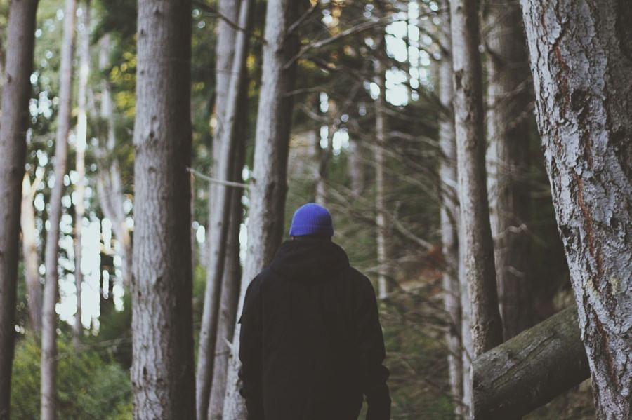

Aptis Speaking Test 13 (Lần tắm mình trong thiên nhiên)
Part 1: In this part, I am going to ask you three short questions about yourself and your interests. You will have 30 seconds to reply to each question.
Today I came here by car. It took me 2 hours to come here. The traffic today was heavy. The heavy traffic made me feel a bit worried about being late. Next time, I will try to leave home earlier. Luckily, I still arrived on time.
I have many friends. In free time, we often go shopping or playing sports together. They help me when I need. We often meet at the weekend and share our problems together. I feel very lucky to have such good friends. They always make me feel happy.
I like spring because it is beautiful with trees and flowers. The weather is warm. I often go for a walk in the park during spring. The fresh air makes me feel relaxed. It is my favorite season of the year.
Part 2: In this part, I'm going to ask you to describe a picture. Then I will ask you two questions about it. You will have 45 seconds for each response.
|
|
|---|---|
I meet my friends at the weekend. We often go to a café. Where we can enjoy coffee, listen to music and chat about everything. We usually stay there for a few hours talking about our lives. It helps me feel less stressed after a busy week. I always look forward to these meetings.
Some people have many friends because they are sociable. They like doing things with friends. It’s fun. They also feel happier when they share their free time with others. I think having many friends can make life more interesting. It is good for our mental health too.
Part 2: In this part, I'm going to ask you to compare two pictures, and I will then ask you two questions about them. You will have 45 seconds for each response.
+ The first picture shows a black man eating in the living room while the second picture shows a man chopping carrots in the kitchen + The man in the first picture looks happy. It seems that he is enjoying his meal whereas the man in the second picture looks serious.
+ Both pictures show people enjoying meals at home |
|---|
Fast food is fast and convenient. It helps people save a lot of time
Home-made food is cheap and healthy. However, home-made food is usually healthier because we can choose fresh ingredients. I think a balance between the two is best. Sometimes I eat fast food, but I try to cook at home more often.
It is important to choose what to eat because it is good for our health. We should choose to eat healthy food, eat more vegetables and fruits. Eating unhealthy food can lead to problems like obesity or heart disease. I try to eat more vegetables every day. It helps me stay energetic and healthy.
Part 4: In this part, I'm going to show you a picture and ask you three questions. You will have one minute to think about your answers before you start speaking. You will have two minutes to answer all three questions.

Tell me about a time you were surrounded by nature.
How did you feel at that time?
How can people be encouraged to protect and preserve nature?
I felt so relaxed because I could enjoy fresh air and watch the nature.
I think we should encourage people to plant trees and educate people about the importance of nature. |
|---|